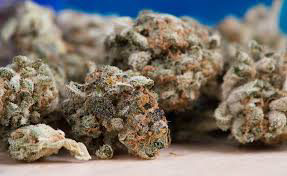

Theres nothign like good old flower, best way to have a social smoke. Flower can be rolled up, put into a wooden pipe or a glass bong. Get creative. Best way to consume flower would be in a water bong. The water helps filter out tar and other harmfull subtances. PLus, who doesnt like the sound of a good bomg rip? Flower is usually sold in 3.5g containers, also known as an 8th.
